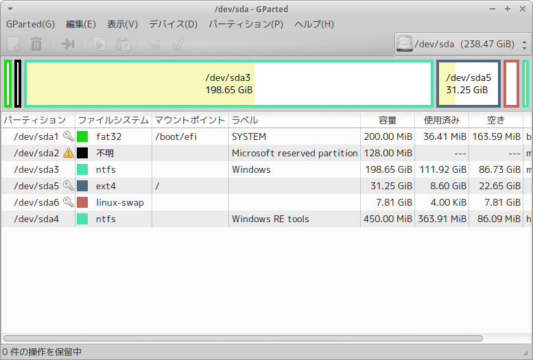

Surface Pro 3 に Ubuntu15.10を入れる(UEFI環境のデュアルブート)
UEFIとは
BIOSの代わりに最近のパソコンに導入されたインターフェース。BIOS特有の制約を解消したものと言える。UEFI環境でブートするには、ディスクの先頭にUEFIシステムパティションというものを置かなければならない。
今現在できること、できないこと
できること
- Surface Pro 3 に Ubuntu 15.10 を入れること。
- Surface Type cover のキーボードを使うこと。
- Surface Type cover のタッチパッドを使うこと。
- タッチ画面を使うこと。
- Surface Pen を使うこと。
できないこと
- Surface Type cover のタッチパッドの２本指スクロール。
- スリープボタン、音量ボタン
→追記2015.11.6：linux kernel 4.3以上で対応！ - 電力効率が悪い（Windows使用時に比べて2/3程度になる）
用意するもの
- Surface Pro 3
- Ubuntuインストール用のUSBメモリ（4GB以上）
- USBハブ
- USBキーボード（最初はSurface Type coverを認識しません）
- USBマウス
Ubuntuインストール手順
1.インストールUSBの作成
まずは、通常通りWindowsで作業を行う。
- Ubuntu JapaneseよりISOイメージをダウンロードする。
- USBWriterなどを使って、ISOイメージをUSBメモリに焼く。
2.Windows側の設定
- bitlockerの停止
コントロールパネルから、bitlockerの暗号化を解除する。 - 高速スタートアップ機能の停止
同じくコントロールパネルから、高速スタートアップ機能を停止する。 - 重要なファイルは必ずバックアップを取っておく
3.USBブート
※他サイトではセキュアブートを解除しろと書いてありますが、解除する必要はありません。Ubuntuはセキュアです。
- 電源の切れたSurfaceにUSBハブとUSBキーボードをつなぐ。
- Ubuntuの入ったUSBメモリを挿す。
- USBブートするために、ボリュームマイナスボタンを押しながら電源ボタンを押す。
- Surfaceロゴが現れたら、ボタンを放す。
- GRUB2のブートローダーが現れるので、Try Ubuntu を選択する。
4.Ubuntu用のパーティション作成

- Altボタンを一度押して、「GParted」アプリを起動する。
- 右上のメニューでUbuntuをインストールするDisk(SSD)を選択する。
- 一番大きいWindowsのパーティションを縮小する。
- 上の操作で空いた領域にまず、Ubuntuのルートディレクトリ用のパーティションを作る。大きさはswp領域のためにSurfaceのRAM+2GBくらい残しておくと良い。マウントやフォーマットはインストール時にするので、適当で良い。
- 残った空き領域をswp領域用にパーティションを作る。ここでも形式は何でも良い。
Point
- WindowsとUbuntuの領域を隣同士に設定しておくと、後で容量の変更がうまくできるのでおすすめ。
- SDカードにUbuntuをインストールすることもできるが、おすすめしません！！動作が遅すぎて使えたものではありません。
5.Ubuntuのインストール
パーティションが作れたら、いよいよUbuntuをインストールします。
先ほどUbuntuように作ったパーティションを編集する
- 容量はお好きなように。（私は32000MB）
- パーティションのタイプは、「基本パーティション」
- パーティションの場所は、「この領域の始点」
- 利用方法は、「ext4ジャーナリングファイルシステム」
- マウントポイントは、「/」を書く。ルートディレクトリということ。
次に、swp領域のセットアップをする。
- 容量はRAM+2GB程度。
- パーティションのタイプは、「論理パーティション」
- パーティションの場所は、「この領域の始点」
- 利用方法は、「スワップ領域」
Windowsがインストールされているパーティション(ntfs)パーティションを編集して、パーティションのタイプを「ntfs」マウントポイントを「/windows」にしておくと、UbuntuからWindows内のファイルにアクセスできるようになる。
ブートローダーインストールデバイスは、Ubuntuのルートパーティションに設定する。
設定ができたら画面に従ってインストールする。
6.Surface Type Cover を使えるようにする
Terminal などで以下のファイルを開き下の文を最下部に追記する。
$ sudo vi /usr/share/X11/xorg.conf.d/10-evdev.conf
Section "InputClass"
Identifier "Surface Pro 3 cover"
MatchIsPointer "on"
MatchDevicePath "/dev/input/event*"
Driver "evdev"
Option "vendor" "045e"
Option "product" "07dd"
Option "IgnoreAbsoluteAxes" "True"
EndSection
「product」の”07dd”はJIS配列のキーボードの場合。US配列は”07dc”とする。
同様に次のファイルにも追記する。
$ sudo vi /usr/share/X11/xorg.conf.d/50-synaptics.conf
Section "InputClass"
Identifier "Disable clickpad buttons on Apple touchpads"
MatchProduct "Apple|bcm5974"
MatchDriver "synaptics"
Option "SoftButtonAreas" "0 0 0 0 0 0 0 0"
EndSection
再起動する。
7.センサー設定
様々なドライバをインストール
$ sudo apt-get install -y lm-sensors
$ sudo sensors-detect
これを実行するといろいろ聞かれるので、yesを打ち続ける。
Bluetoothドライバをインストール
$ git clone git://git.marvell.com/mwifiex-firmware.git
$ mkdir -p /lib/firmware/mrvl/
$ sudo cp mwifiex-firmware/mrvl/\* /lib/firmware/mrvl/
8.必要に応じてLinux-kernelをインストールする。
ここまでの操作でキーボードやタッチ画面や音量ボタンなどが正常に動くならば、kernelのインストールはいらない。
不満な点があるならば、Index of /~kernel-ppa/mainlineから最新のkernelのdebファイルをダウンロードする。 例えば、v4.3が最新なら、
v4.3-wily/linux-headers-4.3.0-040300-generic_4.3.0-040300.201511020949_amd64.deb
v4.3-wily/linux-headers-4.3.0-040300_4.3.0-040300.201511020949_all.deb
v4.3-wily/linux-image-4.3.0-040300-generic_4.3.0-040300.201511020949_amd64.deb
の３つのファイルをダウンロードする。
Terminalで、ダウンロードしたdebのあるディレクトリで
$ sudo dpkg -i linux-*.deb
を実行してインストールする。再起動して直っていたら完成。治らないならば、kernelのソースを入手して、パッチを当ててリビルドする必要があるが、とてもめんどくさい。公式に対応されるのを待つほうが早いかも。
困った時は？
インストール時
インストールは必ずしもうまく行くとは限りません。一度失敗しても、もう一度試すとうまく行く場合があります。
インストール後（ドライバの設定など）
何故かうまく行かない時、再起動するとうまく行くことがあります。とりあえず、再起動してみましょう。
Ubuntuの削除または再インストール
環境をいじっていたらおかしくなってしまって、Ubuntuを諦めたり、再インストールすることがある。そんなときは注意！！
Ubuntuをインストールした際に、ブートローダの優先順位がUbuntu優先になっています。
その状態でUbuntuを削除すると、UbuntuはおろかWindowsも起動しなくなります。
このような記事を参考にしましょう。
Ubuntuを削除したらWindowsが起動しなくなったときは
exfatでフォーマットしたUSBメモリに、UEFIシェルファイルを入れて、そこからブートし、ブート優先順位を変える。
UEFIシェルの入ったUSBメモリを作る
- 正常に動く別のPCでUEFIshellをダウンロードする。
- FAT32でフォーマットしたUSBメモリに、
EFI/Boot/というフォルダを作る。 - その中に先ほどダウンロードしたUEFIシェルを
Bootx64.efiという名前にリネームして入れる。 - 終わり。
ブートの優先順位を変える
- Surfaceの電源が切れた状態でボリュームアップボタンを押しながら電源を入れる→UEFI設定画面が現れる。
- セキュアブートをdisenableにする。UEFIシェルはUbuntuと違ってセキュアブートに弾かれてしまうから。
- 今度は、ボリュームダウンボタンを押しながらSurfaceを起動する。するとUEFIシェルが現れる。
fs1:と入力する。これで、SSDのUEFIシステムパーティションの中に入った。fs0:は今シェルを使っているUSBだと思われる。SSDの他にディスクがつながっているときは、fs1:じゃなくてfs2:とかになるかもしれない。bcfg boot dump -vと入力する。するとブートエントリが表示される。- その中のUbuntuの２桁のブート優先順位の番号（おそらく01）を確認する。
bcfg boot rm 01と入力すると、Ubuntu のブートエントリを削除できる。rebootで再起動する。次からはWindowsが起動するはずだ。
細部の設定
ホームディレクトリのフォルダを日本語から英語に変える
Ubuntuを日本語でインストールすると、ホームディレクトリのフォルダ類（ドキュメントやダウンロードなど）が日本語になっている。このままだと、ターミナルでのアクセスが少し面倒である。これらを英語に変える方法がある。
$ LANG=C xdg-user-dirs-gtk-update
を実行して、現れたダイアログで「Don’t ask me again」にチェックを入れて、「Update Names」を押す。
使ってみての感想
Surface Pro 3 最高ーーー！！
Linux 最高ーーー！